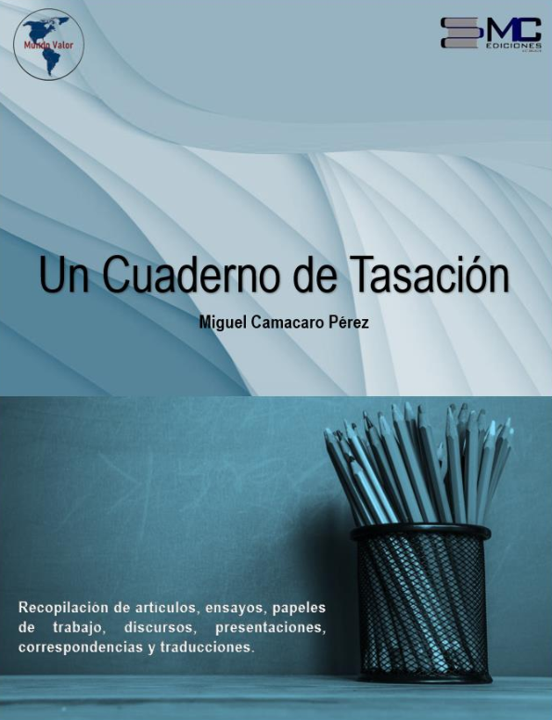

Un Cuaderno de Tasación
Recopilación de artículos, ensayos, papeles de trabajo, discursos, presentaciones, correspondencias y traducciones sobre la ciencia de la tasación inmobiliaria y la ingeniería legal.


Presentación y Prólogo
La difusión del conocimiento científico y la investigación aplicada en la ingeniería de tasación panamericana.
«El ingeniero Miguel Camacaro ha logrado ser el más insigne referente en nuestra profesión... Quienes somos sus colegas nos asombramos de su incansable labor como investigador, abordando una variedad de temas que dan fundamento y nos ayudan a comprender a la tasación de una manera más integral».
«Un Cuaderno de Tasación es una nutrida compilación de varias de las investigaciones, libros y artículos que con su intensa y apasionada dedicación ha realizado durante los últimos años, para elevar el ejercicio responsable y científico de la tasación, que de manera desinteresada pone a disposición para el uso de los colegas valuadores».
Estructura del Tratado
Selecciona un capítulo para abrir directamente el libro interactivo en la página correspondiente.
De la estadística inferencial en la toma de decisiones
Aplicación de modelos econométricos MRLM y Proceso Analítico Jerárquico (AHP) en inversiones inmobiliarias y mercado secundario.
De la vinculación del AHP y los precios inmobiliarios
Análisis crítico del Proceso Analítico Jerárquico, el Ratio de Valoración y la prueba Non Ratio Reciprocity Test (NRRT).
Del método contributivo en los avalúos inmobiliarios
Fundamentos y evolución histórica del Método Contributivo y el Modelo Mandelblatt-Camacaro (MMC) en tasación.
De la depreciación en las construcciones
Análisis crítico del criterio de Ross-Heideck, la escuela alemana de depreciación y su aplicación a máquinas y equipos.
De la ciencia de datos en la tasación
Modelado avanzado, inteligencia artificial generativa, análisis de regresión múltiple y modelos automatizados de valuación (AVM).
De las aventuras del Ing. Marfel Tasable
Aventuras didácticas y resolución de casos prácticos sobre problemas de desinformación y procesamiento estadístico.
De los acontecimientos gremiales
Crónicas sobre el ejercicio profesional, historia de las profesiones, reflexiones del Appraisers Reading Club y enseñanza de la estadística.
Cargando cuaderno de tasación...